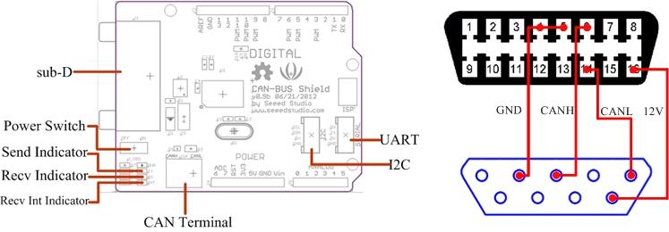
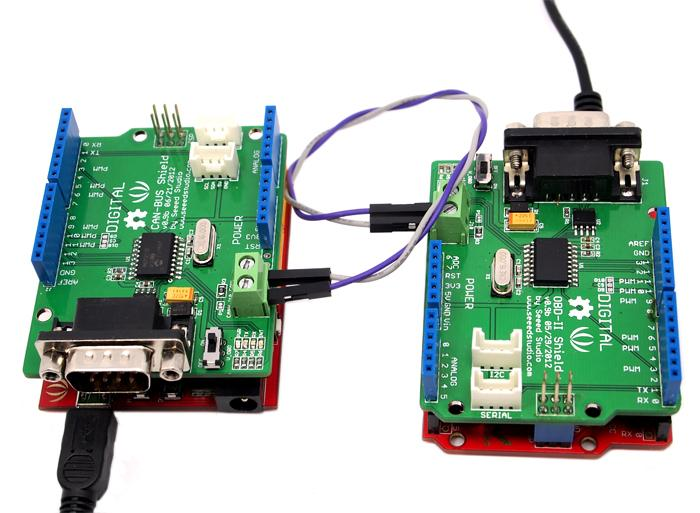
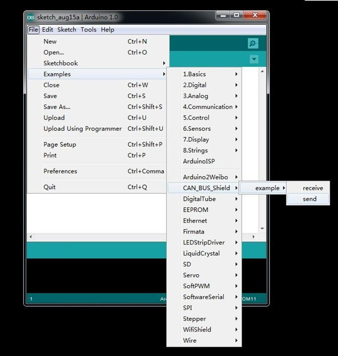
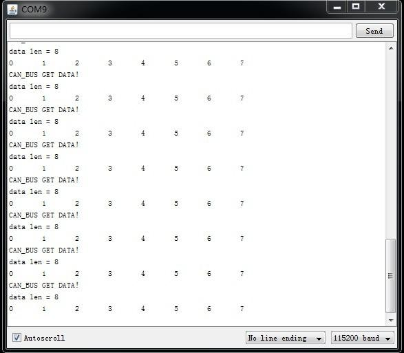
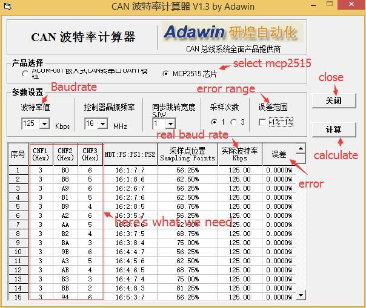
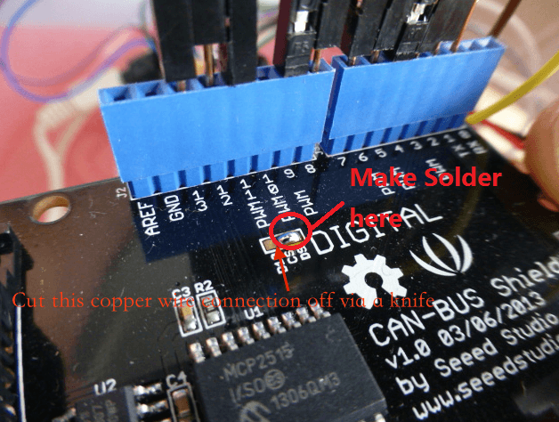
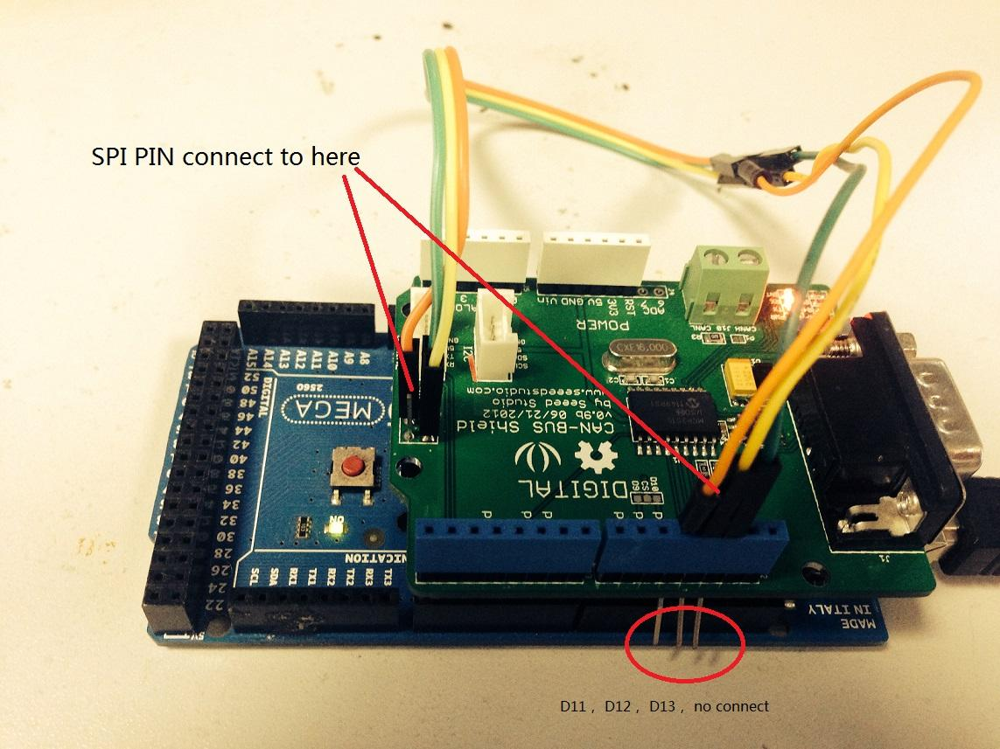
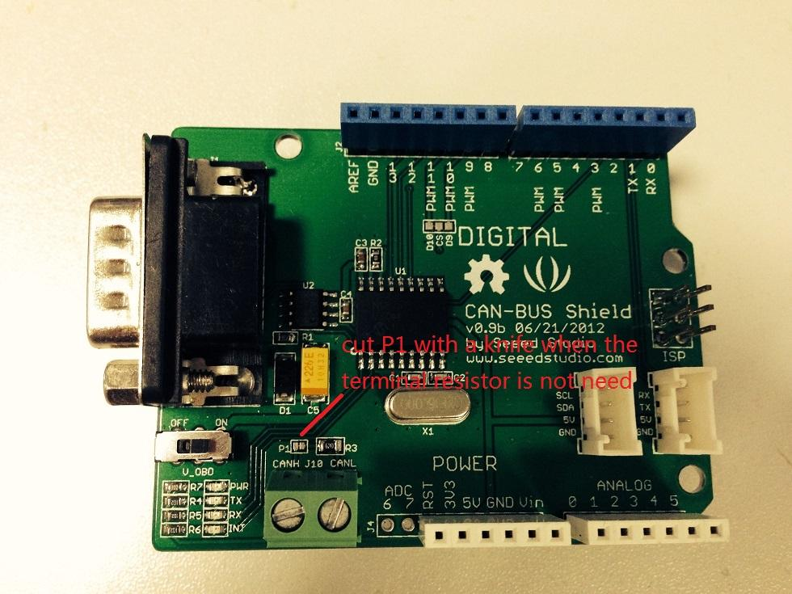

CAN-BUS is a common industrial bus because of its long travel distance, medium communication speed and high reliability. It is commonly found on modern machine tools and as an automotive diagnostic bus. This CAN-BUS Shield adopts MCP2515 CAN Bus controller with SPI interface and MCP2551 CAN transceiver to give your Arduino/Seeeduino CAN-BUS capibility. With an OBD-II converter cable added on and the OBD-II library imported, you are ready to build an onboard diagnostic device or data logger.
Note: We are trying our best to make a better document syste, if you have any suggestion, please feel free to contact loovee@seeed.cc.

Voltage：5V
Dimensions： 68x53mm
Net Weight：50g

Note:
When you use more than two CAN Bus Shield in one net, you should think about the impedance.
You can just cut P1 in the PCB with a knife, or just remove R3 on the PCB.
| Arduino Pin | Function |
|---|---|
| D0 | Not Used |
| D1 | Not Used |
| D2 | Receive Interrupt |
| D3 | Not Used |
| D4 | Not_Used |
| D5 | Not Used |
| D6 | Not Used |
| D7 | Not Used |
| D8 | Not Used |
| D9 | SPI_CS(default) |
| D10 | SPI_CS(selectable) |
| D11 | SPI_MOSI |
| D12 | SPI_MISO |
| D13 | SPI_SCK |
| Arduino Pin | Function |
|---|---|
| A0 | Not_Used |
| A1 | Not_Used |
| A2 | Not_Used |
| A3 | Not_Used |
| A4 | Not Used |
| A5 | Not Used |

1. Download the CAN-BUS Source code file for Arduino 1.0 and release it in the libraries file in the Arduino-1.0 program.: ..\arduino-1.0\libraries.
If the folder name include "-master", just remove it.
2. Open the Arduino-1.0, and you will find 3 examples: receive_check ,send and receive_interrupt. Here we'll use send and receive_check, open it then you should get two programming windows now.

3. Upload two examples to two boards separately. Choose the board via the path: Tools -->Serial Port-->COMX. Note down which board is assigned as a "send" node and which board is assigned as a "receive" node.
4. Open the "Serial Monitor" on the "receive" COM, you will get message sent from the "send" node. Here we have the preset message "0 1 2 3 4 5 6 7" showing in the following picture.

This function is used to initialize the baudrate of the CAN Bus system.
The available baudrates are listed as follws:
#define CAN_5KBPS 1 #define CAN_10KBPS 2 #define CAN_20KBPS 3 #define CAN_25KBPS 4 #define CAN_31K25BPS 5 #define CAN_33KBPS 6 #define CAN_40KBPS 7 #define CAN_50KBPS 8 #define CAN_80KBPS 9 #define CAN_83K3BPS 10 #define CAN_95KBPS 11 #define CAN_100KBPS 12 #define CAN_125KBPS 13 #define CAN_200KBPS 14 #define CAN_250KBPS 15 #define CAN_500KBPS 16 #define CAN_666kbps 17 #define CAN_1000KBPS 18
There are 2 receive mask registers and 5 filter registers on the controller chip that guarantee you get data from the target device. They are useful especially in a large network consisting of numerous nodes.
We provide two functions for you to utilize these mask and filter registers. They are:
Mask:
init_Mask(unsigned char num, unsigned char ext, unsigned char ulData);
Filter
init_Filt(unsigned char num, unsigned char ext, unsigned char ulData);
"num" represents which register to use. You can fill 0 or 1 for mask and 0 to 5 for filter.
"ext" represents the status of the frame. 0 means it's a mask or filter for a standard frame. 1 means it's for a extended frame.
"ulData" represents the content of the mask of filter.
The MCP2515 can operate in either a polled mode, where the software checks for a received frame, or using additional pins to signal that a frame has been received or transmit completed. Use the following function to poll for received frames.
INT8U MCP_CAN::checkReceive(void);
The function will return 1 if a frame arrives, and 0 if nothing arrives.
When some data arrive, you can use the following function to get the CAN ID of the "send" node.
INT32U MCP_CAN::getCanId(void)
CAN.sendMsgBuf(INT8U id, INT8U ext, INT8U len, data_buf);
is a function to send data onto the bus. In which:
"id" represents where the data come from.
"ext" represents the status of the frame. '0' means standard frame. '1' means extended frame.
"len" represents the length of this frame.
"data_buf" is the content of this message.
For example, In the 'send' example, we have:
unsigned char stmp[8] = {0, 1, 2, 3, 4, 5, 6, 7}; CAN.sendMsgBuf(0x00, 0, 8, stmp); //send out the message 'stmp' to the bus and tell other devices this is a standard frame from 0x00.
The following function is used to receive data on the 'receive' node:
CAN.readMsgBuf(unsigned char len, unsigned char buf);
In conditions that masks and filters have been set. This function can only get frames that meet the requirements of masks and filters.
"len" represents the data length.
"buf" is where you store the data.
We had provided many frequently-used baud rate, as below:
#define CAN_5KBPS 1 #define CAN_10KBPS 2 #define CAN_20KBPS 3 #define CAN_25KBPS 4 #define CAN_31K25BPS 5 #define CAN_33KBPS 6 #define CAN_40KBPS 7 #define CAN_50KBPS 8 #define CAN_80KBPS 9 #define CAN_83K3BPS 10 #define CAN_95KBPS 11 #define CAN_100KBPS 12 #define CAN_125KBPS 13 #define CAN_200KBPS 14 #define CAN_250KBPS 15 #define CAN_500KBPS 16 #define CAN_666kbps 17 #define CAN_1000KBPS 18
Yet you may still can't find the rate you want. Here we provide a software to help you to calculate the baud rate you need.
Click here to download the software, it's in Chinese, but never mind, it's easy to use. And the software support Windows only.

Open the software, what you need to do is set the baud rate you want, and do some simple setting, then click calculate
Then you will get some data, cfg1, cfg2 and cfg3.
You need to add some code to the library.
Open mcp_can_dfs.h, you need to add some code at about line 272,
#define MCP_16MHz_xxxkBPS_CFG1 (cfg1) // xxx is the baud rate you need #define MCP_16MHz_xxxkBPS_CFG2 (cfg2) #define MCP_16MHz_xxxkBPS_CFG3 (cfg2)
Then let's go to about line 390, add some code:
#define CAN_xxxKBPS NUM // xxx is the baudrate you need, and NUM is a number, you need to get a different from the other rates.Open mcp_can.cpp, goto the function mcp2515_configRate(at about line 190), then add some code:
case (CAN_xxxKBPS): cfg1 = MCP_16MHz_xxxkBPS_CFG1; cfg2 = MCP_16MHz_xxxkBPS_CFG2; cfg3 = MCP_16MHz_xxxkBPS_CFG3; break;
Then you can use the baud rate you need. And please give me a pull request at github when you use a new rate, so I can add it to the library to help the other guys.
The SPI SS pin is default D10, you can change it to D9 easily.
Firstly, cut off the copper wire between CS and digital 10 via a knife, then do some soldering just like the following image

Then, you need to change the SS Pin in the library.
You can refer to here
As from CAN BUS shield V1.1 to latest version, we changed CS pin from D10 to D9 by default.
So please do this modification
MCP_CAN CAN(9); // Set CS to pin 9
In the old version(this bug had been fixed on 1.1 and the later version) of CAN BUS Shield, SPI pin only connect to D11~D13. For Arduino UNO(all board based on Atmega328), it works fine.
But for the others Arduino boards, it doesn't work, because SPI pin of those board was no D11~D12, so you need to do some hacking.
Just as following:

More details refer to here
There's a 62 Ohm(120 Ohm in version 1.1 hardware) on CAN BUS Shield. Sometime it's not need. You can remove it easily, just as follow:

If you want to make some awesome projects with CAN-BUS shield, here's one example.
Ever wanted to play a car/truck simulator with a real dashboard on your PC? Me too! I'm trying to control a VW Polo 6R dashboard via CAN Bus with an Arduino Uno and a Seeed CAN Bus Shield. Inspired by Silas Parker. Thanks to Sepp and Is0-Mick for their great support!

Modern Vehicles all come equipped with a CAN-BUS Controller Area Network, Instead of having a million wires running back and forth from various devices in your car to the battery, its making use of a more clever system.
All electronic functions are connected to the TIPM, (Totally integrated Power Module), such as solenoids/relays to lock the doors or mini motors to wind the windows ect ect.
From each node (IE Switch pod that controls your windows or electric door locks) it broadcasts a message across the CAN. When the TIPM detects a valid message it will react accordingly like, lock the doors , switch on lights and so on.

Copyright (c) 2008-2016 Seeed Development Limited (www.seeedstudio.com / www.seeed.cc)